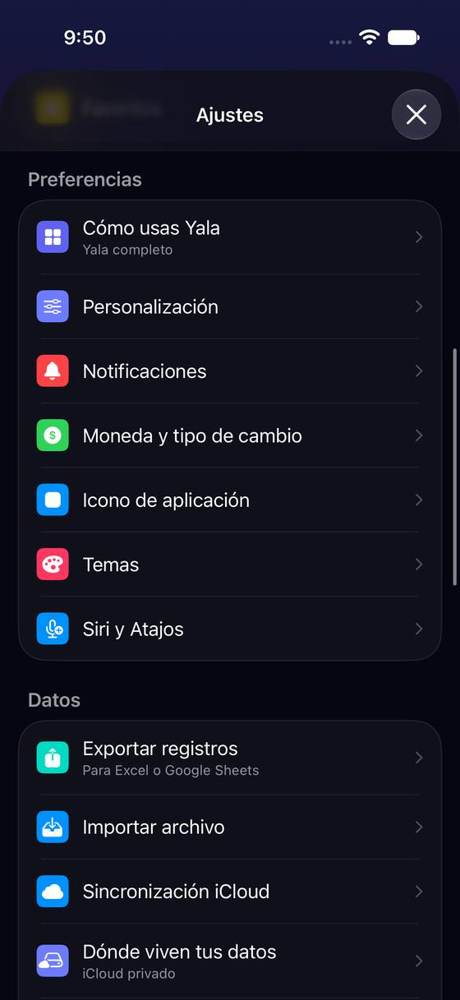
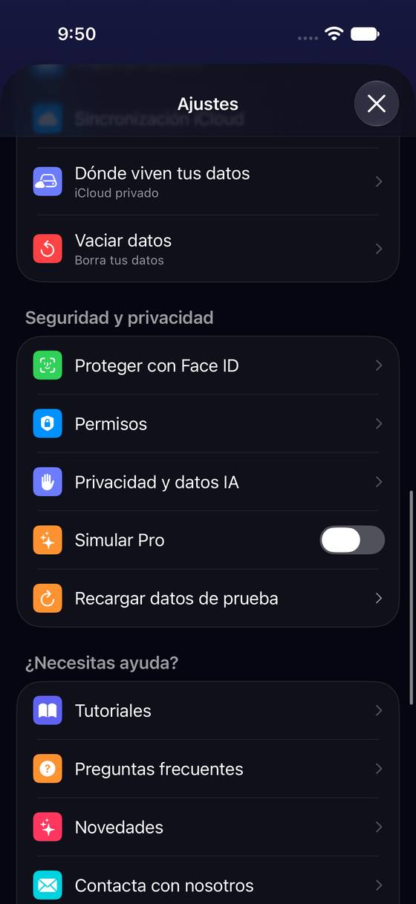
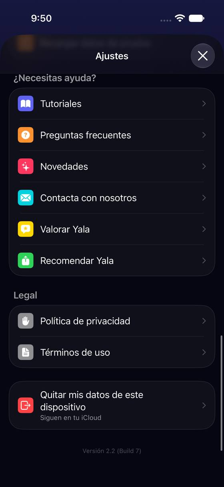
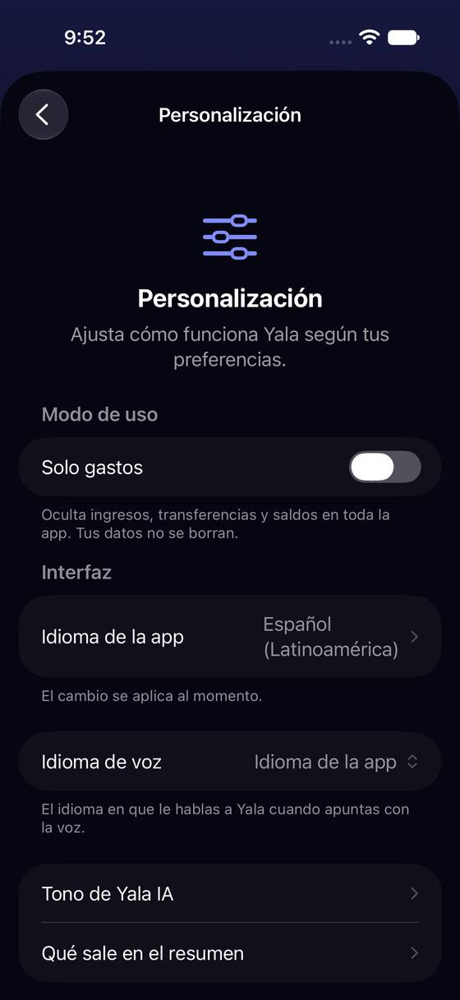
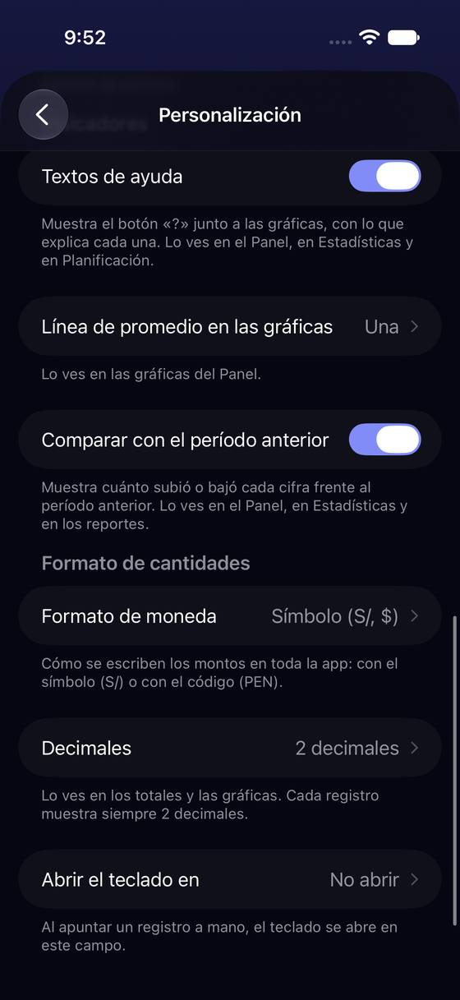

Ajustes son 31 filas en siete bloques, sin buscador, y lo más cambiado vive dentro de «Personalización»
Hoy
Capturas del simulador (app de origin/2.3, semillas de prueba). Pasos hoy: tema oscuro 3 toques + 1 deslizamiento · decimales 4 toques + 2 deslizamientos · recordatorio diario 3 toques (a las 20:00; cambiar la hora, más) · idioma 4 toques · renovación de Pro 1 toque (se lee en la fila)







De dónde sale
- Captura Capturas a01-a01-abajo-3: 7 bloques y 31 filas de usuario (más 2 de desarrollo, solo en Yala Dev).
- Captura Capturas g02: Personalización mide tres pantallas: Modo de uso, Interfaz, Calendario, Indicadores, Formato de cantidades.
- Código
ProfileView.swift:organizacionSection,preferenciasSection,datosSection,seguridadSection,cuentaSection,ayudaSection,legalSection. - Captura Captura b01: la pestaña Buscar busca registros, no ajustes.
- Código
PersonalDetailsView: un solo campo (Nombre) y la foto.
Las opciones
De 3 a 5 alternativas con el mismo caso. Desliza cada recorrido; el anillo cian marca dónde toca Andrea.
Un buscador arriba de Ajustes, que entiende las palabras de la gente
Un campo «Buscar en Ajustes» bajo el título, como el de los Ajustes de iOS. Busca en los títulos de todas las pantallas de Ajustes (también en las de dentro, como Decimales o Idioma de la app) y en una lista de sinónimos: «oscuro» lleva a Temas, «decimales» y «céntimos» a Formato de cantidades, «inglés» a Idioma. Cada resultado dice dónde vive («Personalización › Formato de cantidades») y lleva directo a la fila. La lista de hoy no se toca.
A favor
- No obliga a saber en qué sección vive nada: quien no lee (P3) y quien no conoce las palabras (P2) escriben la suya.
- No cambia el orden de hoy: no hay que reaprender nada.
- Escala: cada ajuste nuevo entra en la búsqueda sin buscarle sitio.
En contra
- Hay que mantener la lista de sinónimos en 16 idiomas.
- No arregla los nombres que engañan (problema 2) ni la lista larga: la tapa.
- Teclear con texto grande o en movimiento cuesta más que tocar.
Reordenar por lo que la persona quiere hacer, con el valor a la vista
La cabecera grande se vuelve una fila (nombre y foto). Arriba van Tu plan (Pro, con lo que usa del plan gratis) y Apariencia e idioma: Tema, Idioma y Formato de cantidades salen de Personalización a su propia fila, cada una diciendo su valor de hoy. Tu día a día junta avisos y «Cómo usas Yala». Lo que se toca una vez (Cuentas, Categorías, Etiquetas) baja a Tus finanzas; lo de datos, seguridad y ayuda, debajo. Personalización queda con lo fino (gráficas, teclado, Yala IA).
A favor
- Cuatro de los cinco ajustes del caso quedan en la primera pantalla y dicen su valor sin entrar.
- Las filas largas de Personalización (3 pantallas) se reparten: deja de ser el cajón de sastre.
- La cabecera de hoy ocupa media pantalla para cambiar un nombre; una fila basta.
En contra
- Cambia de sitio filas que la gente ya encontró: quien usa Yala desde 2.0 tiene que reaprender.
- Hay que decidir qué queda en Personalización y si «Tema» sigue llamándose «Temas».
- Toca la guía de Ajustes de Primeros pasos (coach marks), que apunta a filas concretas.
Ajustes en dos niveles: seis tarjetas grandes
La raíz enseña solo seis tarjetas grandes (Tu plan, Apariencia, Avisos, Tus finanzas, Tus datos y privacidad, Ayuda), cada una con lo que tiene dentro en una línea. Al tocar una, su lista. Es el molde de la app Ajustes del iPad o de muchas apps bancarias.
A favor
- La raíz cabe en una pantalla, también con texto grande en dos columnas o una.
- Cada tarjeta dice qué hay dentro: se lee de un vistazo.
- Ordena la casa para cuando haya más ajustes.
En contra
- Un toque más que A2 para todo: decimales queda en 4 (como hoy) y Cuentas pasa de 2 a 3.
- Esconde los ajustes detrás de una palabra: si la tarjeta no es la que la persona imagina, vuelve atrás.
- Rompe la costumbre de iOS (lista con secciones) que ya es la de toda la app.
Una fila de accesos rápidos arriba de la lista
Sin mover nada, arriba de la lista sale una fila de cuatro controles para lo que más se cambia: Tema (claro/oscuro), Idioma, Decimales y Recordatorio diario. Cada uno se cambia ahí mismo con un menú, sin entrar a ninguna pantalla. La lista de hoy sigue debajo, igual.
A favor
- Los ajustes del caso quedan a 2 toques de Ajustes (3 desde el Panel).
- No reordena nada: barato y sin reaprender.
- Sirve de pista: enseña que esas cosas se pueden cambiar.
En contra
- Elige cuatro ajustes por la gente: los demás siguen igual de escondidos.
- Duplica controles (están también dentro de sus pantallas).
- Con texto grande la fila de cuatro no cabe: pasa a 2×2.
Lado a lado
La última pantalla de cada recorrido, frente a hoy.
Comparación
| Opción | Pasos para el caso (maqueta) | Esfuerzo | Riesgo | Reabre |
|---|---|---|---|---|
| Hoy | tema oscuro 3 toques + 1 deslizamiento · decimales 4 toques + 2 deslizamientos · recordatorio diario 3 toques (a las 20:00; cambiar la hora, más) · idioma 4 toques · renovación de Pro 1 toque (se lee en la fila) | — | — | — |
| A1 · Un buscador arriba de Ajustes, que entiende las palabras de la gente | Decimales: 3 toques + teclear (hoy 4 toques y 2 deslizamientos). Tema oscuro: 3 + teclear | medio | bajo | — |
| A2 · Reordenar por lo que la persona quiere hacer, con el valor a la vista | Decimales: 3 toques (avatar › Formato › Sin decimales). Tema: 3. Idioma: 3. Ningún deslizamiento | medio | medio | — |
| A3 · Ajustes en dos niveles: seis tarjetas grandes | Decimales: 4 toques. Tema: 4. Cuentas: 3 (hoy 2) | alto | medio | — |
| A4 · Una fila de accesos rápidos arriba de la lista | Decimales: 3 toques (avatar › Decimales › Sin decimales). Tema: 3. Idioma: 3 | bajo | bajo | — |
Lente de perfiles
Perfiles simulados, no entrevistas Los siete perfiles de la revisión del usuario nuevo, usados como lentes. riesgo alto de trabarse · medio · bajo.
| Perfil | Hoy | A1 | A2 | A3 | A4 |
|---|---|---|---|---|---|
| P1 · Migrante de Excel | lo busca en «Personalización» | busca como en Excel | bloques con nombre | una capa más | — |
| P2 · Principiante abrumado | no sabe qué es Personalización | escribe su palabra | aún hay que leer | pocas opciones | a la vista |
| P3 · Anotador rápido que no lee | no lee 31 filas | no lee la lista | primera pantalla | un toque más | dos toques |
| P4 · Experto de otra app | echa de menos buscar | lo esperado | como iOS | más lento | duplicado |
| P5 · Llega por una invitación de grupo | ve pocas filas | pocas filas igual | — | — | — |
| P6 · Varias monedas y tarjeta | formato escondido | — | formato a la vista | — | solo cuatro |
| P7 · Texto grande, a veces en iPad | 4 pantallas, más con AX | teclear con AX | sin desplazar | tarjetas grandes | no cabe en una fila |
Recomendación: A2
Reordenar por intención con el valor a la vista resuelve la causa (los nombres y el cajón de Personalización) y deja cuatro de los cinco ajustes en la primera pantalla. Si la lista sigue creciendo, A1 (buscador) se suma después sin rehacer nada; A4 es la salida barata si hoy no se quiere mover ninguna fila.
Qué decide Jürgen
- ¿Se reordena Ajustes por intención (A2)? ¿Se suma el buscador (A1) ahora o cuando crezca?
- ¿Tema, Idioma y Formato de cantidades salen de Personalización a su propia fila?
- ¿La cabecera «Usuario / Editar perfil» pasa a ser una fila?
Revisión por vistas 2.3 · Perfil, Más, Ajustes generales, Pro y ayuda. Maquetas en HTML con datos ficticios: no son la app. Pasos contados sobre las maquetas; los de «Hoy», en el simulador o en el código citado.